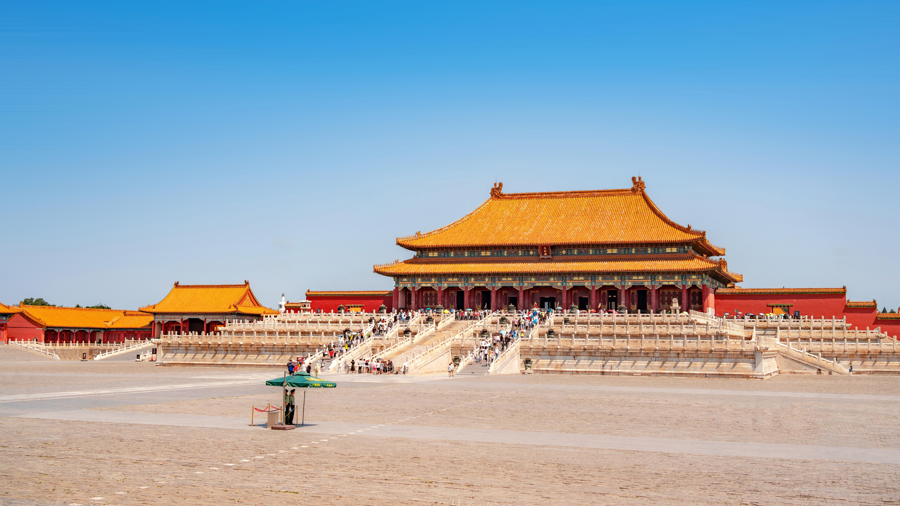

The Forbidden City
From： baike.baidu.com

Known as one of the greatest palaces in the world, the Forbidden City sits in the heart of the Chinese capital. Serving as the royal residence of the emperors of China for two consecutive dynasties – the Ming (1368-1644) and the Qing (1644-1911) – this palace bears a silent yet priceless testimony to Chinese civilization from the 15th to 20th century.
This magnificent architectural edifice features landscaped gardens and fabled "9,999.5 rooms" – which in reality add up to a little more than 8,700 rooms, according to a research in the early 1980s. The Palace Museum was established in 1925, and remains one of the most prestigious museums in China and the world at large. Recognized for its iconic red walls and yellow glazed roof tiles, this former imperial palace is considered to represent the culmination of traditional Chinese palatial architecture, providing an "outstanding example of the greatest palatial architectural ensembles in China." It was listed as a UNESCO World Heritage Site in 1987.
According to UNESCO, the layout and spatial arrangement of the Forbidden City "inherits and embodies the traditional characteristics of urban planning and palace construction in ancient China, featuring a central axis, symmetrical design and layout of an outer court at the front and inner court at the rear and the inclusion of additional landscaped courtyards deriving from the Yuan city layout." And this splendid complex also plays an integral part in the Beijing Central Axis, the ancient "book spine" central to the layout of old Beijing's bilateral symmetry and spatial pattern, which creates a cultural "backbone" connecting numerous landmarks that demonstrate the charm and solemnity of the capital city.
Stretching from the Yongding Gate in the south, running across the Zhengyang Gate, Tian'anmen Square, the Forbidden City, and ending at the Drum and Bell Tower in the north, the 7.8-kilometer-long Beijing Central Axis has been bearing exceptional witness to the Chinese capital since the 13th century, and is "not only a representative physical carrier of recalling traditional urban life, but an urban landscape still in full vigor," as the Tentative Lists of UNESCO states. After hundreds of years of vicissitudes, the Beijing Central Axis is now ushering in a new chapter as China gears up to seek UNESCO World Heritage status for this ancient urban landscape.
 330445074@qq.com
330445074@qq.com